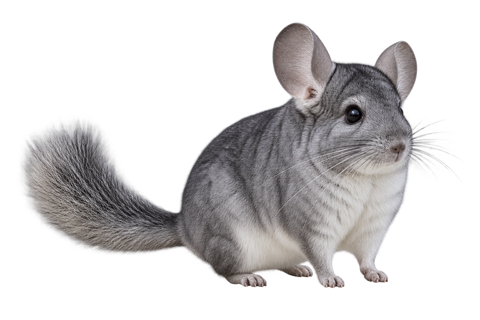
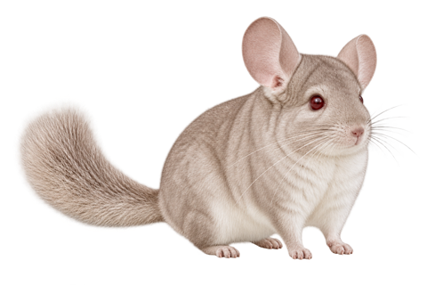
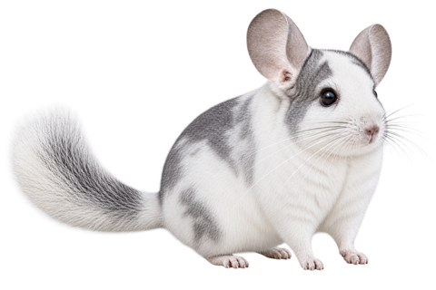
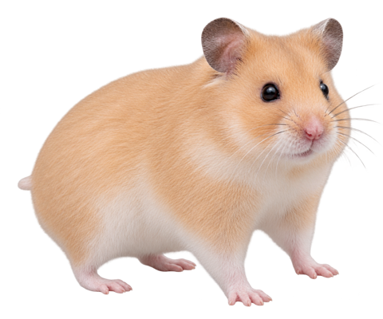
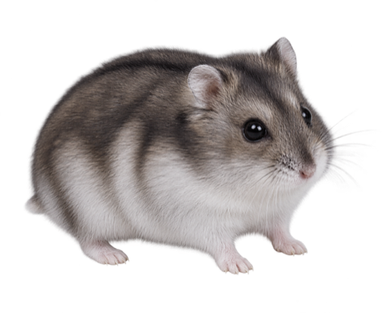
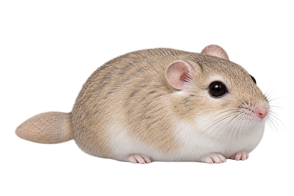
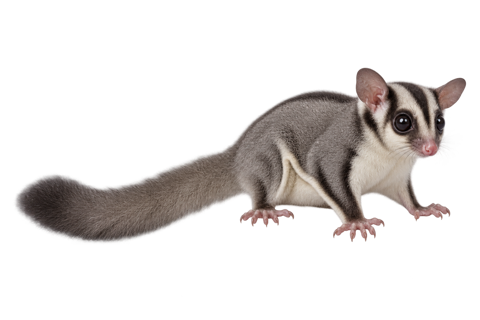
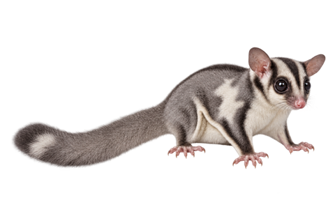

Distinctive motion
Chinchillas hop, hamsters explore, and sugar gliders glide. Every species has three motion patterns.
Chinchillas, hamsters, macaroni mice, and sugar gliders occasionally visit your screen. Your wallpaper stays in place, and clicks pass straight through.
Five species, ten coat variations, and three motions for each: 30 clips in all.

We studied how each animal looks and moves, then made short appearances to suit each species.
Chinchillas hop, hamsters explore, and sugar gliders glide. Every species has three motion patterns.
Animals appear in a transparent overlay. Your wallpaper remains, and mouse clicks pass through.
Pick one variant, a selected group, or all of them. Set how often they appear and how large they look.
Automatic visits pause while you focus and resume when a break starts. Defaults are 25 minutes of focus, 5 minutes of break, and a 15-minute break every fourth round. You can change the times and show a small countdown.
Ten coat and pattern variations. The macaroni mouse has one natural coat here; we have not invented extra color varieties.








